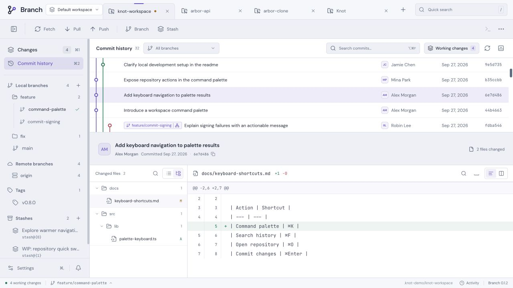

01
흩어진 저장소를 한곳에.
워크스페이스와 그룹으로 프로젝트를 정리하고, 탭이나 사이드바에서 저장소를 전환하세요.
GIT, TIED TOGETHER.
당신의 프로젝트가 모이는
데스크톱 Git 클라이언트.
설치하거나 사용하면 이용약관에 동의하는 것으로 봅니다.
YOUR WORKSPACE.
저장소를 정리하고, 변경을 비교하고,
커밋까지 자연스럽게 이어가세요.
macOS · 첫 공개 베타

하나로 이어지는 작업 흐름
열어야 할 저장소부터 확인해야 할 변경까지.
매일 하는 Git 작업을 한곳에서 이어가세요.
워크스페이스와 그룹으로 프로젝트를 정리하고, 탭이나 사이드바에서 저장소를 전환하세요.
파일의 Diff를 비교하고 필요한 변경을 스테이징하세요. 내용을 확인하며 커밋을 준비할 수 있어요.
브랜치와 커밋을 그래프로 살펴보고, 검색과 파일별 히스토리로 변경의 흐름을 확인하세요.
익숙한 Git, 더 편한 작업 공간
앱에 포함된 Git과 기존 설정을 함께 사용해요.
필요하면 내 컴퓨터에 설치된 Git도 선택할 수 있어요.
Fetch, Pull, Push로 원격 저장소와 작업을 이어가세요.
명령 팔레트와 검색, 원하는 키 설정으로 도구를 빠르게 사용하세요.
한국어·영어, 라이트·다크 테마와 포인트 색상을 선택할 수 있어요.
처음 시작하는 Branch
작업하던 저장소를 그대로 열고,
Branch에서 다음 변경을 확인하세요.
내려받은 DMG를 열고 Branch를 응용 프로그램 폴더로 옮기세요.
내 컴퓨터의 Git 저장소를 열어 작업 공간에 모아보세요.
파일의 Diff와 커밋 그래프에서 작업의 흐름을 확인하세요.
첫 공개 베타를 설치하기 전에 확인해 주세요.
macOS 12 이상에서는 Git과 Git LFS가 앱에 포함되어 별도 Git 설치 없이 사용할 수 있어요.
macOS 11에서는 시스템 Git 2.38 이상이 필요해요. 다른 macOS에서도 원하면 설정에서 시스템 Git을 선택할 수 있어요.
기존 Git·SSH·키체인 설정을 사용해요. 앱 내 로그인은 제공하지 않으므로 원격 작업 전에 인증을 준비해 주세요.
새 Mac으로 옮긴 뒤에도 인증은 별도로 설정해야 해요.
내려받은 DMG를 열고 Branch를 응용 프로그램 폴더로 끌어다 놓으세요. macOS가 앱을 확인할 수 없다거나 손상되었다고 알리면 열지 말고, 파일을 지운 뒤 알려 주세요.
설치한 뒤에는 Branch가 새 버전을 확인하고 내려받아요(설정 → 업데이트에서 바꿀 수 있어요). 설치는 직접 확인한 뒤에만 진행돼요.
Windows 버전은 준비 중이에요. Intel Mac과 Linux는 첫 공개 베타에서 지원하지 않아요.
Branch는 내 컴퓨터의 저장소를 다루는 데스크톱 Git 클라이언트예요. 웹 버전은 없고, 이 페이지에서 Mac용 앱을 내려받을 수 있어요.
Windows 버전을 준비하고 있어요. 공개되면 이 페이지 맨 위의 Windows 버튼에서 내려받을 수 있어요. 지금은 Apple silicon Mac용 첫 공개 베타만 제공해요. 지원 환경 확인하기
macOS 12 이상에서는 앱에 포함된 Git과 Git LFS를 사용할 수 있어요. macOS 11에서는 시스템 Git 2.38 이상이 필요해요. 기존 SSH 키와 Git 인증 설정, 커밋 훅과 서명 설정도 그대로 쓸 수 있어요. 지원 환경 확인하기
네. 첫 공개 베타를 이 페이지에서 내려받을 수 있어요. Apple silicon Mac과 macOS 11 이상이 필요해요. 내려받은 DMG를 열고 Branch를 응용 프로그램 폴더로 옮기면 돼요. 다운로드로 이동 · 지원 환경 확인하기
베타 기간에는 무료로 쓸 수 있어요. 유료 플랜을 도입하거나 무료로 제공하는 범위를 바꾸게 되면 적용일 30일 전까지 이 페이지와 업데이트 릴리즈 노트로 알려 드려요. 이용약관 제4조 보기